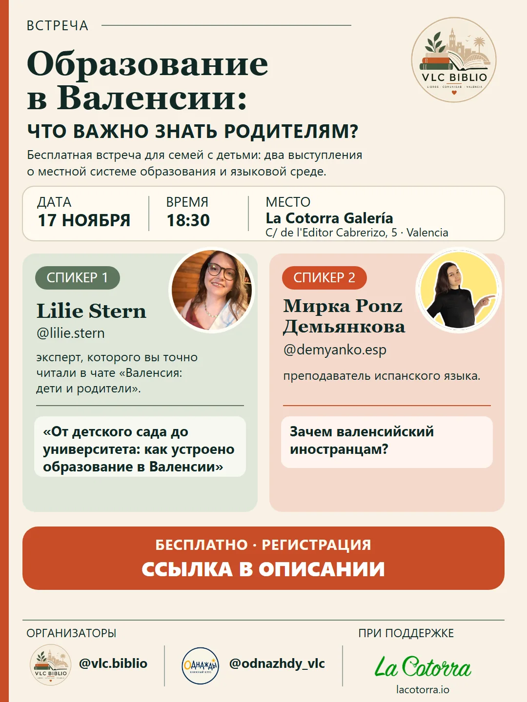

Educación en Valencia: qué deben saber las familias
¿Cómo funciona el sistema educativo en Valencia? ¿Cómo elegir colegio, qué tener en cuenta al solicitar plaza y qué papel tiene el valenciano en el aprendizaje?
Invitamos a las familias con hijos a un encuentro gratuito. Dos ponencias ayudarán a comprender las cuestiones principales y a orientarse mejor en el sistema educativo local.
Ponente 1 — Lilie Stern, experta a quien seguramente habéis leído en el chat «Valencia: niños y familias».
Tema: «De la escuela infantil a la universidad: cómo funciona la educación en Valencia».
Programa:
- Etapas principales de la educación.
- Cómo matricular a un niño en un colegio.
- Sistema de colegios adscritos.
- Colegios públicos y privados concertados.
- Opciones para continuar los estudios.
Ponente 2 — Mirka Ponz Demyankova (@demyanko.esp), profesora de español.
Tema: «¿Por qué necesitan valenciano las personas extranjeras?».
Programa:
- La importancia de las lenguas regionales en España.
- Mi educación en valenciano.
- Cómo apoyé el ruso en casa.
- Consejos para mis padres: qué se podría haber hecho mejor.
Después de las ponencias habrá tiempo para preguntas, intercambio de experiencias y conversación.
La participación es gratuita, con inscripción previa.